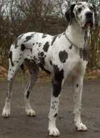

El perro (Canis lupus familiaris) es un mamitero carnivoro de la familia de los canidos, una subespecie del lobo (Canis lupus) que acompaña a los humanos desde hace al menos 14 000 años Su tamaño forma y pelaje es muy diverso según la raza Posee un ordo y olfato muy desarrollados. Su vida promedio es de 15 años, aunque las razas pequeñas puede alcanzar una longevidad de 20 años
Hay aproximadamente 500 razas más que de cualquier otro animal que varian significativamente en tamaño, sonomia y temperamento Las razas do portos en sentido modemo comenzaron a partir de la precisa documentación de los pedigres que se establecen en el Kennel Club Inglés en 1873, a imitación de otros registros genealógicos para ganado y caballos.
El yorkie se origino en Yorkshire, una región del norte de Inglaterra. A finales de 1865, un perro de exposición llamado Huddersfield Ben-que era uo Paisley terrier con tipo de Yorkshire terrier-propiedad de una mujer que vivia en Yorkshire, Mary Ann Foster, fue visto en las exposiciones caninas en toda Gran Bretaña, y fue quien definió el estándar de la raza denominada Yorkshire terrier. El nombre oficial de la raza se adoptó en 1870.

El término alemán Dogge se aplicaba antiguamente a los perros grandes y fuertes que no pertenecian necesariamente a una raza en particular. En 1880, durante una exposición levada a cabo en Berlin, se estableció el primer estándar para el Dogo alemán. Este ha sido controlado por el Deutscher Doggen-Club 1888 e.V y alterado en algunas ocasiones a través de los años La versión actual se conforma al modelo de la Federacion Cinológica Internacional.
